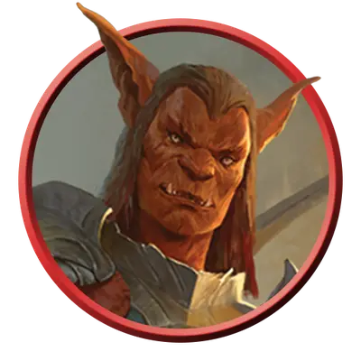

Капитан хобгоблинов
Hobgoblin Captain
Средняя Фея (Гоблиноид), Принципиальная Злая

Класс Защиты 17 Инициатива +4 (14)
Хиты 58 (9к8 + 18)
Скорость 30 футов
| мод | спас | ||
|---|---|---|---|
| СИЛ | 15 | +2 | +2 |
| ЛОВ | 14 | +2 | +2 |
| ТЕЛ | 14 | +2 | +2 |
| мод | спас | ||
|---|---|---|---|
| ИНТ | 12 | +1 | +1 |
| МДР | 10 | +0 | +0 |
| ХАР | 13 | +1 | +1 |
Чувства Тёмное зрение 60 футов, пассивное Восприятие 10
Языки Общий, Гоблинский
Опасность 3 (700 опыта; БВ +2)
Особенности
Аура властности. Находясь в 10-футовой Эманации, исходящей от капитана, сам капитан и его союзники совершают с Преимуществом броски атаки и спасброски, если только капитан не имеет состояния Недееспособный.
Действия
Мультиатака. Хобгоблин совершает две атаки Двуручным мечом или Длинным луком в любой комбинации.
Двуручный меч. Бросок рукопашной атаки: +4, досягаемость 5 фт. Попадание: 9 (2к6 + 2) Рубящего урона плюс 3 (1к6) урона Ядом.
Длинный лук. Бросок дальнобойной атаки: +4, дистанция 150/600 фт. Попадание: 6 (1к8 + 2) Колющего урона плюс 5 (2к4) урона Ядом.
Бонус мастерства +2
Среда обитания Горы, Леса, Луга, Подземье, Пустыня, Холмы, Ахерон
Сокровища Личные, Оружейные
Хобгоблины
Завоеватели бескрайних горизонтов
Хобгоблины воплощают первобытную жажду расти и распространяться, и выражаются эти порывы в стремлении подчинить своим прихотям весь мир. По одиночке хобгоблины захватывают лесные угодья и разоряют дикие края. Сбиваясь же в группы, они образуют иерархичные воинственные сообщества, одержимые целью покорять земли и высасывать из них все соки во имя собственного захватнического рвения.
Хобгоблины часто подчиняют животных, чудовищ и любящих разрушения Фей — особенно гоблинов и медвежатников, — дабы те служили их замыслам. Они могут заключать союзы с драконами, военачальниками, слугами воинственных богов и другими могущественными созданиями, сулящими им власть над новыми землями. Если же хобгоблинам подмять под своей железной пятой целую страну, они устремляют взоры к новым завоеваниям, пускаясь за моря, нисходя в Подземье или отправляясь к звёздам и иным планам бытия.
Многие хобгоблины служат свирепому богу Маглубиету, чья жажда захватов не уступает их собственной. Последователи Маглубиета среди хобгоблинов процветают на Бесконечных полях брани Ахерона, где без устали отдаются своей страсти к господству. Эти одержимые войной хобгоблины применяют изощрённую тактику и странное оружие, которое порой обрушивают и на миры Материального плана.
Капитаны хобгоблинов — это полевые тактики. Они ведут союзников к победе, полагаясь на собственное боевое мастерство и подстёгивая прочих приказами и угрозами. Обычно под началом капитана состоят боевые отряды хобгоблинов или банды более слабых чудовищ.
Военная стратегия хобгоблинов
Стремление покорять и грабить заложено в сверхъестественной природе хобгоблинов, хотя некоторые способны подавить свои воинственные наклонности или обратить их на более полезные устремления. Совершите бросок по таблице «Стратегии хобгоблинов» для вдохновения или выберите сами метод, которым действуют хобгоблины в подготовке завоеваний.
Стратегии хобгоблинов
| 1к6 | Хобгоблины стремятся… |
| 1 | Построить судно, что понесёт армии хобгоблинов к новым захватам. |
| 2 | Изловить чудовищ и выдрессировать их для битв. |
| 3 | Обрушить целую область вглубь Подземья, чтобы выгрести сокровища из развалин. |
| 4 | Возвести огромную машину для переработки ресурсов. |
| 5 | Уговорить дьяволов, драконов или других хобгоблинов вторгнуться во вражеские земли. |
| 6 | Подбить недальновидных купцов расшатать устои власти или разорить природные богатства. |